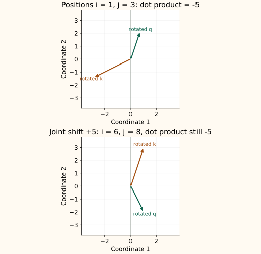
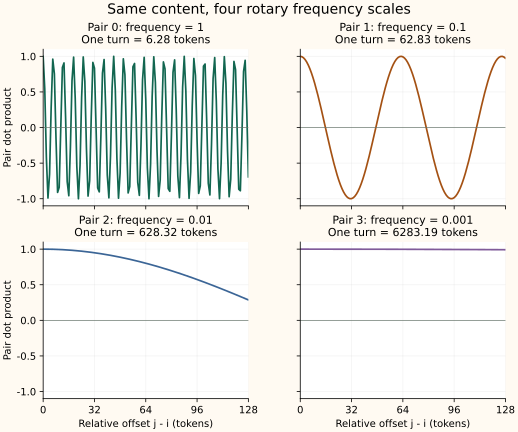

RoPE: Relative Position Through Rotated Queries and Keys
Rotary Position Embedding (RoPE) gives attention a position signal by rotating parts of the query and key vectors. Each token uses its own absolute position to choose an angle. When the rotated vectors are compared, their angles combine into a relative offset.
Jia-Bin Huang's video How Rotary Position Embedding Supercharges Modern LLMs [RoPE] connects the order problem to rotation, frequency bands, and context extension. This guide follows that progression in original prose, with independent calculations and figures. We will also connect the geometry to tensor shapes, pair layouts, and cached decoding.
Why plain attention needs a position signal
Compare the word sequences Maya follows Arun and Arun follows Maya. The words are the same; who follows whom is not. A content-only, fully visible self-attention layer has no feature saying which word occupies which slot.
Shuffle the token rows and their queries, keys, and values shuffle together. Each query still compares with the same collection of keys. Its scores and the values those scores weight move together, so the output belonging to each token stays the same and moves to its new row. This is permutation equivariance: the outputs reorder with the inputs, rather than remaining in their old slots.
Write the shuffle as a matrix
Let $P$ be a permutation matrix acting on token rows, and let softmax act separately on each row. For unmasked attention:
Thus $\operatorname{Attention}(PQ,PK,PV)=P\,\operatorname{Attention}(Q,K,V)$. Shared token-wise projections and feed-forward layers do not remove this symmetry.
A causal mask changes this argument: shuffling tokens while keeping the same lower-triangular mask changes which content each token can see. A decoder therefore gets some order information from visibility. RoPE supplies an explicit position-dependent comparison inside Q and K; the mask still handles visibility.
Why rotate instead of adding a position vector?
With additive sinusoidal encoding, the input at position $i$ is $x_i+p_i$: token content plus a position vector. The projections see both. Using column vectors, $q_i=W_Q(x_i+p_i)$ and $k_j=W_K(x_j+p_j)$. Put $M=W_Q^\top W_K$ and expand the unscaled score:
The four terms mix content and absolute position. Raw matched sine/cosine features have useful relative-offset identities, as the positional-encoding deep dive explains. Arbitrary learned projections and the cross terms do not automatically make this whole score a function of $j-i$.
RoPE projects the content first and then applies a position-dependent rotation. That placement gives the query/key dot product an exact relative-position identity. It does not mean additive encoding cannot learn relative relationships or that RoPE alone guarantees better predictions.
Where does RoPE enter attention?
A layer first projects token representations into queries Q, keys K, and values V. Standard RoPE rotates Q and K after those projections; it does not add a separate position vector to the input and ordinarily does not rotate V.
| Quantity | Meaning |
|---|---|
| $q_i$ | The unrotated query vector for token position $i$: what that token wants to match. |
| $k_j$ | The unrotated key vector for position $j$: how that candidate is compared with the query. |
| $v_j$ | The value vector mixed into the output after attention weights are computed. |
| $\hat q_i,\hat k_j$ | The query and key after their positional rotations. |
$d_k$ is the complete query/key width of this head, including any coordinates that are not rotated. A causal or padding mask is then applied, softmax turns the allowed scores into weights, and those weights combine V. RoPE and the mask do different jobs: one changes matching geometry, the other controls which keys are allowed.
Begin with one two-dimensional plane
Take two coordinates $(a,b)^\top$ from a query or key. Use the counterclockwise rotation convention:
$\theta$ is an angle in radians. For one coordinate pair, choose a frequency $\omega$, meaning radians of rotation per token step. Position $i$ gives query angle $i\omega$; position $j$ gives key angle $j\omega$. Both use the same frequency:
This matrix uses ordinary coordinate order $(a,b)$. The fixed-position guide stored its phase features as $(\sin\theta,\cos\theta)$, which gives the opposite off-diagonal signs in that guide's shift matrix. The coordinate convention explains the difference; query and key rotations here must both follow the convention stated above.
Why does the position difference appear?
Two facts about rotations do the work. Transposing reverses a rotation, $R(\theta)^\top=R(-\theta)$. Applying two rotations adds their angles, $R(\alpha)R(\beta)=R(\alpha+\beta)$. Substituting the rotated query and key into their dot product gives:
The absolute position factors combine into $j-i$. Shifting both indices by the same amount leaves that difference unchanged. This identity holds for fixed unrotated content vectors and the same frequency schedule; the vectors themselves can depend on token content and earlier layers.
The sign follows our convention. The equivalent expression $(R((i-j)\omega)q_i)^\top k_j$ rotates the query instead. A formula using $i-j$ is not automatically a different algorithm, but its vector ordering and rotation signs must match.
See the cancellation as an angle
For nonzero two-dimensional content vectors, let their original directions be $\phi_q$ and $\phi_k$. RoPE changes those directions to $\phi_q+i\omega$ and $\phi_k+j\omega$ without changing their lengths. Their angle difference is $(\phi_k-\phi_q)+(j-i)\omega$, so:
The content sets the original lengths and angle; position adds a relative phase. A common position shift turns both arrows by the same extra angle, leaving the angle between them unchanged. If either vector is zero, the dot product is zero and the matrix derivation still applies.
A numerical relative-phase example
Use an illustrative frequency $\omega=\pi/4$ radians per token, or 45 degrees per token step. This is chosen for easy arithmetic, not as the default first frequency of every model. With $q=k=(1,0)$, query position 1 rotates to $(\sqrt2/2,\sqrt2/2)$ and key position 3 to $(-\sqrt2/2,\sqrt2/2)$. Their dot product is zero, equal to $\cos((3-1)\pi/4)$.
Shift both positions forward by five: their difference stays two, so the dot product remains zero. Change only the key position to 2 and the dot product becomes $\cos(\pi/4)=\sqrt2/2$. These facts are exact for the chosen vectors, independent of any model training.
The experiment checks rotation algebra without a causal mask. Some slider settings put a key after the query; a causal decoder would mask that score. RoPE itself does not decide whether a key is visible.
Use different query and key values
Real projected content vectors need not be identical or unit length. Keep $\omega=\pi/4$, but use $q=(2,1)^\top$, $k=(1,3)^\top$, and positions $i=1,j=3$:
Using the unrounded values, their dot product is $0.7071(-2.8284)+2.1213(-1.4142)\approx-5$. The relative-angle form produces the exact same answer: $(j-i)\omega=\pi/2$, $R(\pi/2)k=(-3,1)^\top$, and $q^\top(-3,1)=-5$.
| Positions | Rotated query and key | Dot product |
|---|---|---|
| $i=1,j=3$ | q: $(0.7071,2.1213)$ k: $(-2.8284,-1.4142)$ | -5 |
| $i=6,j=8$ | q: $(1,-2)$ k: $(1,3)$ | -5 |


The score still contains content
Write the relative angle as $\delta=(j-i)\omega$, with query entries $q_1,q_2$ and key entries $k_1,k_2$. Expanding the relative rotation gives:
Our vectors give coefficients 5 and -5, so the score is $5\cos\delta-5\sin\delta$. RoPE changes how content is matched across positions; it does not replace content with a distance score. The trigonometric terms also oscillate, so there is no universal rule that farther keys must receive smaller logits.
Apply different clocks to different coordinate pairs
The relevant width is the rotated part of a query/key head, not necessarily the input embedding width. Let $d_r$ be that even rotary width and $b$ the configured frequency base. A standard schedule is:
For $d_r=4$ and $b=10000$, the frequencies are 1 and 0.01. A vector $(1,2,3,4)$ at position 2 becomes:
| Original pair | Angle $2\omega_r$ | Rotated pair |
|---|---|---|
| $(1,2)$ | 2 radians | $(-2.2347,0.0770)$ |
| $(3,4)$ | 0.02 radians | $(2.9194,4.0592)$ |
Each pair uses its own rotation; combining the blocks does not require constructing a large matrix in code. If only a prefix of the head is rotated, the remaining features pass through unchanged and add their ordinary content dot product to the score.
For example, embedding width 768 with 12 equal-width query heads gives head width 64. Full-head RoPE would rotate 64 coordinates; a model using a rotary prefix of 32 rotates only half. The frequency configuration belongs to that model. Check the actual rotary width, base, scaling rules, and pairing layout rather than substituting the embedding width or a guessed default.
What fast and slow planes let a head learn
A frequency is easier to interpret through its wavelength, $\lambda_r=2\pi/\omega_r$: the number of token steps for one complete turn in that plane. With $d_r=8$ and $b=10000$, the four planes span very different scales:
| Pair $r$ | Frequency $\omega_r$ | Token steps per turn |
|---|---|---|
| 0 | 1 | 6.28 |
| 1 | 0.1 | 62.83 |
| 2 | 0.01 | 628.32 |
| 3 | 0.001 | 6283.19 |
One step changes the fastest plane's phase by one radian but the slowest plane's phase by only 0.001 radians. Fast planes can help distinguish nearby offsets. Over a window where $|(j-i)\omega_r|$ is small, a slow plane barely changes the content comparison: $\cos\delta\approx1$ and $\sin\delta\approx\delta$ in the expanded score.


The video connects this geometry to Round and Round We Go! What makes Rotary Positional Encodings useful? Its main analysis of Gemma 7B finds high-frequency positional heads and low-frequency bands that the authors interpret as semantic information channels. Slow rotations make that interpretation plausible over a limited window, but the paper also shows why those channels need not remain robust at arbitrarily long lengths. These are learned uses of coordinates, not fixed jobs assigned to every pair in every model.
A full rotary score sums content-weighted contributions from all its planes. Those contributions can reinforce or cancel each other. A fast plane does not impose a hard local window, and a slow plane is not position-free; at sufficiently large offsets its phase changes too. Neither the individual cosine curves nor their learned sum guarantees monotonic distance decay.
Adjacent pairs and split-half pairs
Adjacent pairing uses $(x_0,x_1),(x_2,x_3),\ldots$. Split-half pairing instead matches $x_r$ with $x_{r+d_r/2}$. For four coordinates, the storage layouts representing the same two logical pairs are:
In the second row, the halves $(a,c)$ and $(b,d)$ are paired across their corresponding entries. Split-half implementations often use $\operatorname{rotate\_half}(x)=(-x_{\mathrm{second\ half}},x_{\mathrm{first\ half}})$, along with cosine/sine tables repeated in the same half-wise order.
The conventions are equivalent after a consistent coordinate permutation. Switching only the rotation code while keeping a checkpoint's query/key projections unchanged generally changes the model. Tensor shapes can still look correct while the values are wrong. LabML's reference illustrates split-half pairing; the short function below uses adjacent pairs.
A small adjacent-pair reference
The function uses NumPy with import numpy as np. Here x ends in an even rotary width, frequencies has one entry per pair, and position supplies the logical token position. The formula operates on feature values; it is not generating a standalone positional vector.
def rotate_pairs(x, position, frequencies):
# x: [..., 2*r], with adjacent coordinates forming pairs
pairs = x.reshape(*x.shape[:-1], -1, 2)
angle = position * frequencies
a, b = pairs[..., 0], pairs[..., 1]
out = np.stack([a*np.cos(angle) - b*np.sin(angle),
a*np.sin(angle) + b*np.cos(angle)], axis=-1)
return out.reshape(x.shape)Broadcast positions across batches and heads
Suppose Q and K each have shape [batch, heads, sequence, head_width]. Position IDs have shape [batch, sequence]. For an even rotated width $d_r$, frequencies have shape [d_r/2]. Add singleton head and pair axes to the IDs:
| Quantity | Shape |
|---|---|
| Q or K | [B, H, S, D] |
| Paired features | [B, H, S, d_r/2, 2] |
| Position IDs after reshaping | [B, 1, S, 1] |
| Angles: IDs times frequencies | [B, 1, S, d_r/2] |
The singleton head dimension lets the same token positions broadcast across all heads. Q and K may have different head counts in grouped-query attention; apply the rotation to each separately with the same head-coordinate convention.
import numpy as np
# A small full-head example: B=1, H=2, S=3, D=d_r=4.
q_heads = np.arange(24, dtype=float).reshape(1, 2, 3, 4) / 10
k_heads = q_heads[..., ::-1].copy()
position_ids = np.array([[0, 1, 2]])
frequencies = 10000.0 ** (-np.arange(0, 4, 2) / 4)
position_view = position_ids[:, None, :, None] # [1, 1, 3, 1]
q_rot = rotate_pairs(q_heads, position_view, frequencies)
k_rot = rotate_pairs(k_heads, position_view, frequencies)
scores = (q_rot @ k_rot.swapaxes(-1, -2)) / np.sqrt(4)For partial rotation, call the function on the selected rotary prefix and concatenate the untouched remainder. Do not assume every coordinate is rotated or that the attention scale should change to $\sqrt{d_r}$; the scale still uses the complete query/key head width.
The worked-example script checks attention's permutation symmetry, the score expansions, these tensor shapes, equivalent pair layouts, partial rotation, cached scores, and the extension schedules below. It also generates both original figures, using the shared math-lab helpers for attention and matrix rotation.
Cached keys retain their original positions
During prefill, rotate each key once at its logical position and cache that rotated key. If a prefix contains positions 0, 1, and 2, a new token uses position ID 3. Its new query is rotated at 3 and compared with keys already rotated at 0, 1, and 2.
The cached key is still associated with position 1. Rotating it again for the new query position would change its phase incorrectly. A cache's physical array slot or memory page is not the token's logical position ID.
If the entire sequence is shifted by a common offset and both Q and K rotations are adjusted consistently, the relative dot-product identity is preserved. Changing only the positions of newly generated tokens or resetting them to zero breaks the intended relation.
The frequency schedule must also agree across cached keys and new queries. If a context-extension method changes frequencies during generation, follow that implementation's cache-recomputation or invalidation rules; do not mix keys encoded under one schedule with queries under another and expect the same relative identity.
Compute phases in adequate precision
The angle is position times frequency. Constructing large position IDs or angles directly in float16 or bfloat16 can merge nearby positions before the sine or cosine is evaluated. Many implementations form phases in float32, then cast rotation coefficients or outputs to the model's working dtype.
Float32 is not an unlimited guarantee either: it cannot distinguish every consecutive integer beyond $2^{24}$. Large-angle argument reduction and the actual device/dtype also matter. A query tensor stored in reduced precision does not imply that its angle calculation should use that same reduced precision.
The examples here use NumPy float64 to check the mathematics. Validate the production kernel, dtype, cache, and position range separately; a passing small rotation example is not a performance or long-context benchmark.
Why a formula at any position is not unlimited context
Rotations are periodic in each plane. New lengths expose the network to unfamiliar combinations of phases and distances, and attention must distinguish useful matches from competing tokens over a larger candidate set. A model can therefore fail far beyond its training lengths even though every trigonometric value is finite.
| Choice | What changes |
|---|---|
| Linear position interpolation | Replace $i$ with $i/s$, equivalently dividing all frequencies by $s$. A wider position range uses the old phase range, with lower local resolution. |
| Change the base | Replace $b$ in $b^{-2r/d_r}$. Each pair changes by a different factor; the first pair stays at frequency 1. This is not uniform position interpolation. |
| Band-dependent schemes such as YaRN | Treat different frequency scales differently and may add an attention or amplitude scaling factor. Use the checkpoint's full configuration. |
Position interpolation compresses every clock equally
Suppose a model was trained with a 2048-token window and we want to adapt it to 8192 tokens. The expansion factor is $s=8192/2048=4$. Position interpolation evaluates the old rotation schedule at a compressed index:
Position 6000 now uses the phase that the original schedule assigned to position 1500. A one-token offset uses a quarter of its old phase difference in every plane. This trades fine positional resolution for fitting a longer sequence into the familiar phase range. It changes the geometry even inside the old window; the interpolation paper adapts models with fine-tuning rather than treating this as a cost-free inference switch.
NTK-aware scaling stretches the bands differently
The video's next step keeps fast rotations relatively intact while slowing the low-frequency planes more. One fixed, NTK-aware base adjustment for an even rotary width $d_r>2$ is:
The fastest pair, $r=0$, stays unchanged. The slowest pair, $r=d_r/2-1$, is divided by $s$. The pairs between them change by intermediate factors. For our eight-coordinate example and $s=4$:
| Pair | Original | Position interpolation | Fixed NTK-aware |
|---|---|---|---|
| 0 | 1 | 0.25 | 1 |
| 1 | 0.1 | 0.025 | 0.0629961 |
| 2 | 0.01 | 0.0025 | 0.0039685 |
| 3 | 0.001 | 0.00025 | 0.00025 |
This difference follows directly from the exponents. The NTK-aware name motivates a frequency-scaling design; it does not prove that the resulting checkpoint preserves all its behavior. Dynamic variants can also make the adjustment depend on sequence length, which brings back the cached-frequency consistency problem.
Some extended schemes add scaling beyond pure rotation, so the standard unit-norm-preserving statement need not describe the full modified operation. None of these changes automatically turns a short-context checkpoint into a reliable long-context model.
The Transformers rotary-utilities documentation describes configuration fields such as rotary width, base, scaling type, and scaling factor. These names and implementations can vary by framework and model. The existing RoPE and YaRN chapter develops extension schedules in more detail.
Evaluate more than whether the sequence fits
The video ends with results from A Controlled Study on Long Context Extension and Generalization in LLMs. It separates adapting to a longer training window from generalizing beyond that window. Its comparisons control the base model, training recipe, and data, so a frequency method is not getting credit for an unrelated model improvement.
| Check | What it asks | What it cannot establish alone |
|---|---|---|
| Language-model perplexity | Does the model still predict held-out text well as the evaluated context grows? | An aggregate prediction metric does not establish successful retrieval at every document location. |
| Needle in a Haystack | Can the model recover a planted fact? Vary both total length and the fact's depth in the document. | Recovering one fact does not establish reliable multi-step reasoning or synthesis across a long document. |
Perplexity and downstream performance can correlate; these checks are not opposites. The study reports strong correlation for exact fine-tuned methods under its controlled setup, while approximate attention methods can show different tradeoffs. Its finding that exact fine-tuning generally works better within the adapted window does not establish unlimited extrapolation.
For a claimed extension, record the pretrained window, the adaptation window, and the evaluation lengths separately. Compare frequency schedules with the same checkpoint and adaptation budget, and inspect retrieval across document depths. A tensor accepting 64K tokens is a capacity claim; using distant information accurately is a behavior to measure.
What rotation preserves
For standard pure RoPE, $R(\theta)^\top R(\theta)=I$, so it preserves the norm of the vector being rotated. At position zero it is the identity, and at a known position it can be inverted with the opposite angle. Those mathematical properties do not establish easy optimization or accurate predictions.
Different rotations do not preserve the original query/key dot product; that relative change is the point. Shared orthogonal rotation preserves a dot product. Changing masks, key sets, earlier representations, or frequency schedules can still change a complete attention distribution even when a selected fixed-content pair satisfies the relative identity.
This distinction is also central to MLA: position-dependent rotation can obstruct moving a key projection into the query side. Separating positional and content paths allows a compact cache representation.
Try it: If both query and key positions increase by the same amount, what happens to their rotary dot product?
It is unchanged for fixed unrotated content vectors and the same frequency schedule, because only their position difference appears in the identity.
Try it: For a fourfold extension, do position interpolation and fixed NTK-aware scaling treat the fastest pair the same way?
No. Position interpolation divides every frequency by four. In the stated fixed NTK-aware schedule, the fastest pair stays at frequency 1, while the slowest pair is divided by four. The schedules therefore change nearby-token comparisons differently.
Sources and further reading
- Jia-Bin Huang: How Rotary Position Embedding Supercharges Modern LLMs [RoPE], the video behind this guide's progression from order to rotation, frequency roles, and context extension.
- Attention Is All You Need, the original Transformer and its additive sinusoidal position encoding.
- RoFormer, the primary rotary-position formulation.
- Round and Round We Go! What makes Rotary Positional Encodings useful?, the video's reference for learned frequency use and the limits of distance-decay intuition.
- Extending Context Window of Large Language Models via Positional Interpolation, uniform phase compression and adaptation.
- A Controlled Study on Long Context Extension and Generalization in LLMs, the video's reference for controlled extension and evaluation.
- EleutherAI: Rotary Embeddings, geometric and complex-number intuition.
- LabML: Rotary Positional Embeddings, a worked derivation and implementation with split-half pairing.
- Transformers: Rotary Embeddings Utilities, practical configuration and scaling variants.
Compare with ALiBi, which injects a distance preference directly into the logits instead of rotating coordinates.